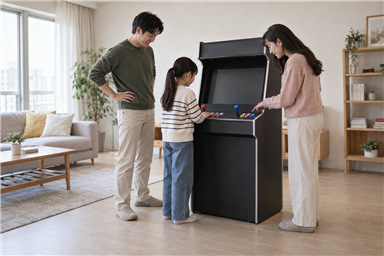
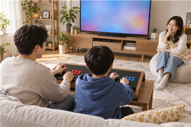

가정용 오락기를 가족과 함께 쓰려면 누가 사용할지, 한 명씩 할지 두 명이 함께 할지, 조작 높이와 소리·이용 시간을 어떻게 맞출지 먼저 정하세요. 제품 수나 게임 수보다 가족이 실제로 편하게 번갈아 사용하고 함께 즐길 수 있는 환경인지 확인하는 것이 중요합니다.

함께 사용할 사람과 플레이 방식을 먼저 정하세요
어른과 아이가 함께 쓸지, 가족이 번갈아 쓸지, 두 사람이 동시에 즐길 게임이 필요한지부터 적어 보세요. 같은 가족이라도 키와 익숙한 게임, 사용하는 시간이 다르므로 이용 장면을 먼저 정하면 필요한 형태를 비교하기 쉽습니다.
가족용 오락기는 사람 수보다 누가 어떤 방식으로 사용할지를 먼저 정해야 합니다.
- 주로 사용할 가족 구성원
- 혼자·번갈아·2인 동시 플레이 여부
- 자주 즐길 게임과 조작 난이도
- 평일과 주말의 예상 이용 시간
가정용 오락기는 두 사람이 함께 할 수 있나요?에서 2인 사용 전 확인할 항목도 볼 수 있습니다.

조작 높이와 두 사람 자리를 함께 확인하세요
가족마다 키와 팔 길이가 다르므로 조작부에 손이 편하게 닿는지, 화면을 무리 없이 볼 수 있는지 살펴보세요. 두 명이 나란히 사용할 때 어깨와 팔이 부딪히지 않는지, 뒤로 물러날 공간이 있는지도 확인해야 합니다.
조작 높이와 두 사람의 자리는 가장 작은 사용자와 실제 설치 공간을 기준으로 확인해야 합니다.
아이와 함께 사용할 예정이라면 아이와 함께하기 좋은 오락실 게임도 참고할 수 있습니다.
소리와 이용 시간을 가족 기준으로 맞추세요
거실이나 공용 공간에서는 게임 소리가 대화와 휴식에 영향을 줄 수 있습니다. 가족이 함께 정한 시간에 이용하고 시작 전에 음량을 맞추면 다른 사람이 쉬는 시간과 겹치는 일을 줄일 수 있습니다.
가족이 함께 쓰는 오락기는 소리와 이용 시간을 미리 합의해야 꾸준히 사용하기 편합니다.
음량 확인 방법은 오락기 소리는 집에서 어떻게 조절하나요?에서 확인하세요.
설치 공간과 문의 내용을 한 번에 정리하세요
노리박스 제품 페이지에는 스탠드형부터 TV 연결형, 게임팩과 액세서리까지 안내되어 있고, 설치 공간과 함께 즐길 사람을 알려주면 제품을 안내한다는 상담 문구가 있습니다. 설치할 자리의 크기와 가족 구성원, 원하는 플레이 방식을 함께 정리해 문의하면 제품 형태를 비교하기 쉽습니다.
설치 공간과 가족의 사용 방식을 함께 전달해야 필요한 제품 형태를 구체적으로 비교할 수 있습니다.
가족의 이용 기준을 정리한 뒤 제품자세히보기에서 제품 형태를 확인하고, 필요한 내용은 연락하기에서 문의하세요.